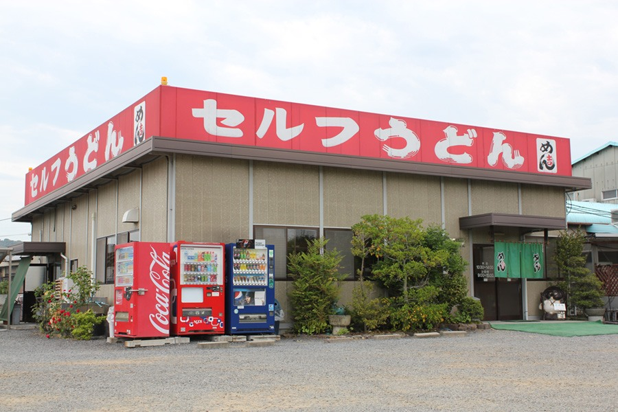

セルフを超えた楽しみの待つ唯一無二の店を目指して！！
2014年4月22日 更新
香川県坂出市林田町１５８１－１
府中湖スマートＩＣから車で１５分
坂出北ＩＣから車で１０分
※お店の住所によってはカーナビなどで的確な場所を示さない場合があります。ご注意ください。
（平日）１０：３０～１４：００
（土） ９：００～１５：００
（日・祝） ９：００～１５：００
１月１日と１月２日のみ休日
※取材後に定休日や営業時間が変更される場合があります。ご注意ください。

地元では「店主の名言が書かれた黒板のある店」として有名だとか…
TEL 877-47-3853
座席 60席
駐車場 50台
トイレ 有
備考
我輩は猫である。名前はまだない。

しこしこうどん 百こ萬
第75番札所 総本山 善通寺
山下うどん
| かけうどん | 205円 |
|---|---|
| ぶっかけうどん | 290円 |
| しょうゆうどん（あげたて鯛ちくわ） | 310円 |
| 湯だめうどん | 300円 |
| ざるうどん | 310円 |
| 冷やしうどん | 310円 |
| カレーライス（小） | 480円 |
|---|---|
| カレーライス（大） | 580円 |
| 日替わり定食（小） | 650円 |
| 日替わり定食（大） | 700円 |
| ヘルシーな定食 | 600円 |
| 古代素麺（１００グラム×３袋） | ６４０円 |
|---|---|
| アンデスの塩（３００グラム） | ５５０円 |
| オーガニックキヌア（３００グラム） | １１００円 |
| 黒米（６００グラム） | ８７０円 |
| 放し飼いノンストレス卵（１個） | ６０円 |
| オーガニック黒チアシード（１２０グラム） | ６９０円 |
| 創業年 | 1192年 |
|---|---|
| ぬるさの加減 | 普通 |
| だしの素材 | 普通 |
| 一玉の重さ | 260グラム |
| 麺の太さ | ４ミリ（夏は細目） |
| 自分で入れられる薬味 | ねぎ・しょうが・ごま・七味・天かす・わさび・レモン |
| うどんの地方発送 | 可能 |
| 玉売り | 可 １玉１０５円 だし１人前１０５円 |
| さぬきの夢２０００ | 不使用 |
やわ肌のように滑らかな舌触りとモチモチ食感に優れた「めん吉」の麺。「温度や湿度によって生地の寝かし時間を調節し、製麺にはたっぷり２０時間以上かけています。そうすることで跳ね返すような弾力と表面の滑らかさが生まれるんですよ」。
そう話す店主・猪熊敦史さんが目指すのは、楽しさあふれる店づくり。バリエーション豊かなメニュー構成、生き生きと仕事をこなすスタッフなど、客目線に立つ配慮が行き届いた明るい店内には、年代を問わず付加価値を感じられるような食の楽しみが詰まっています。
もちろん肝心な味わいにも手抜きなし。人気の「肉ぶっかけ」は、自然素材で甘みとうま味を引き出しただしと甘辛く味付けた牛肉が、麺の個性を際立たせる仕上がりです。柔らかな肉で麺を包みながら口に運べば、その味わいに思わず笑みが。舌の肥えたうどん通に多く支持されていることにもうなずけます。